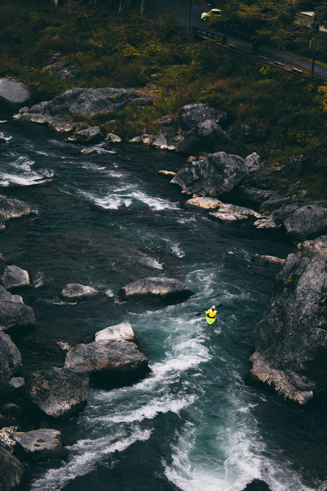
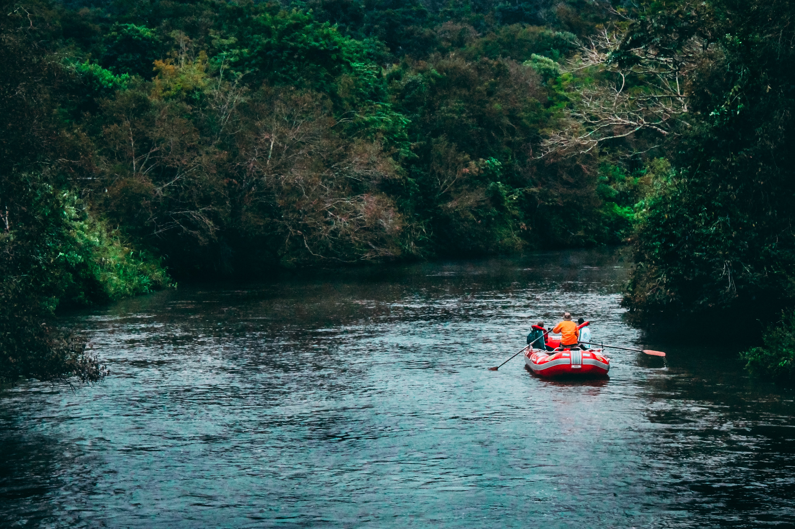
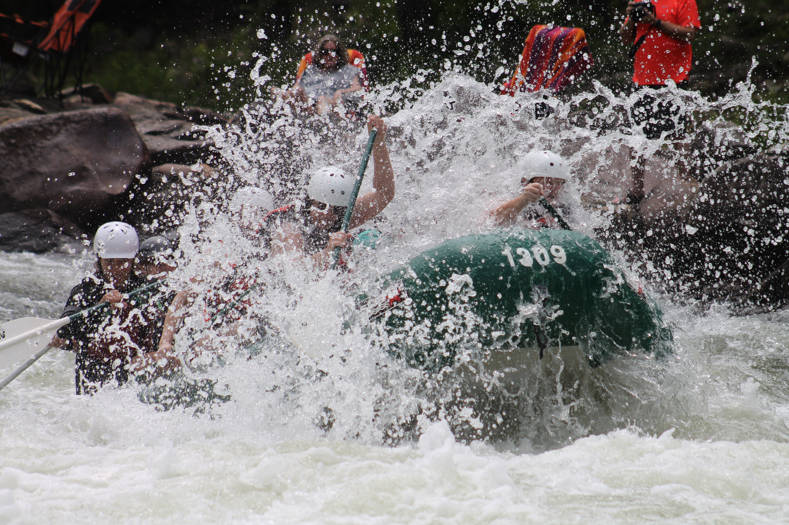
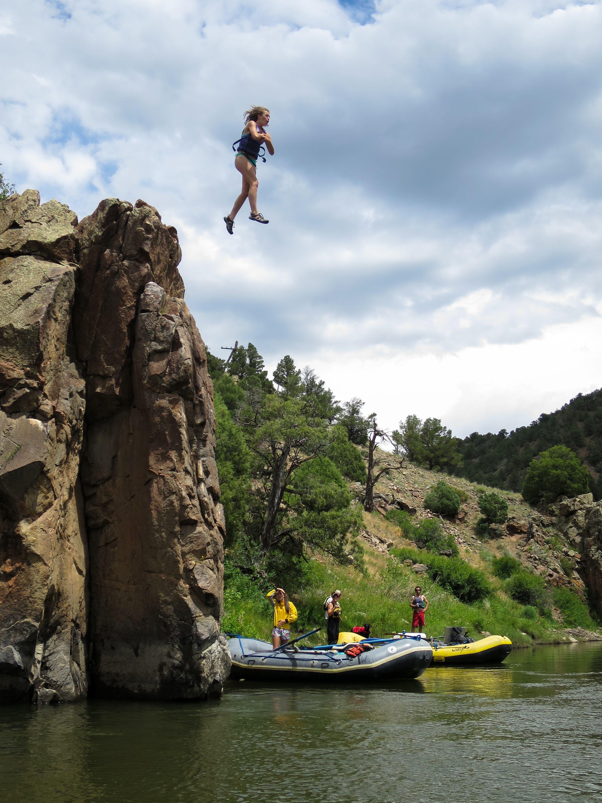
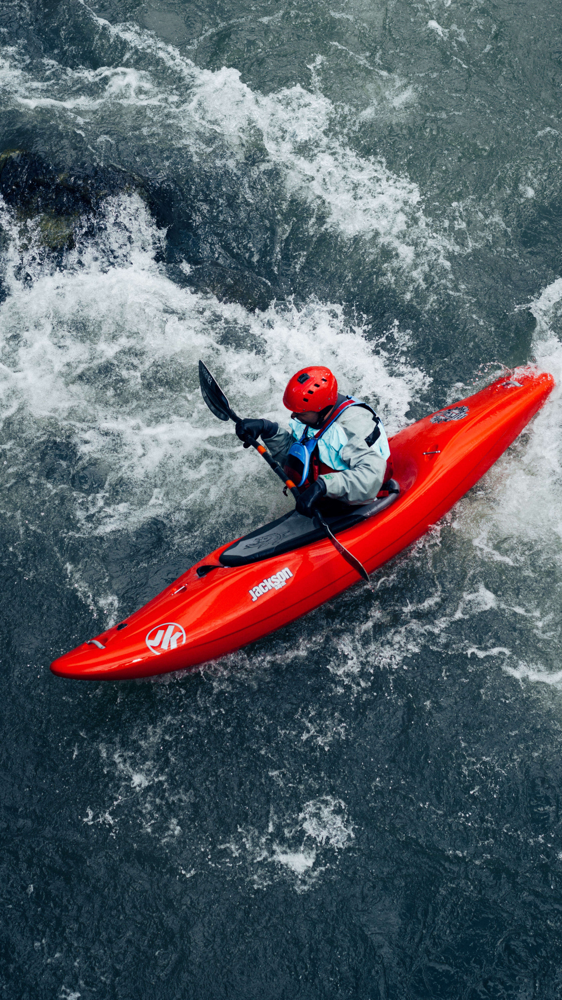
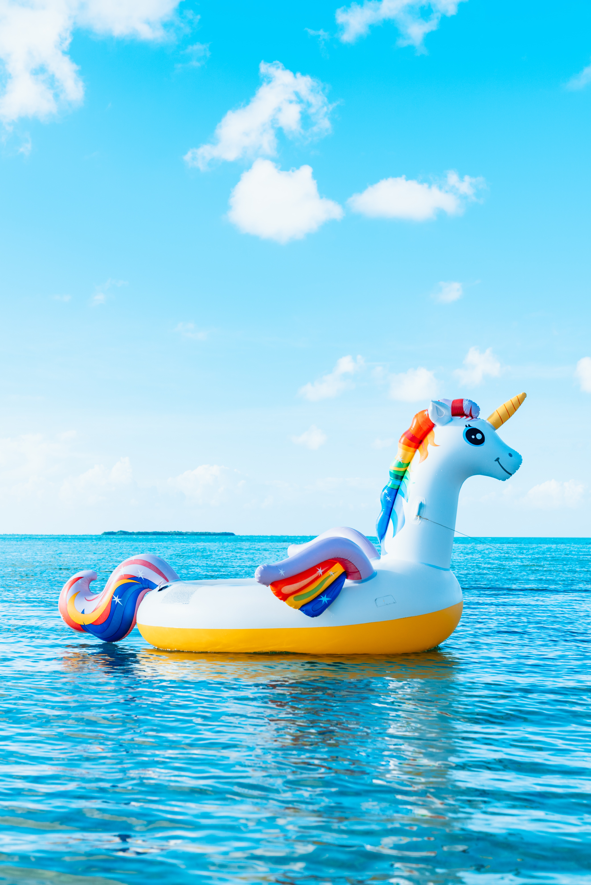
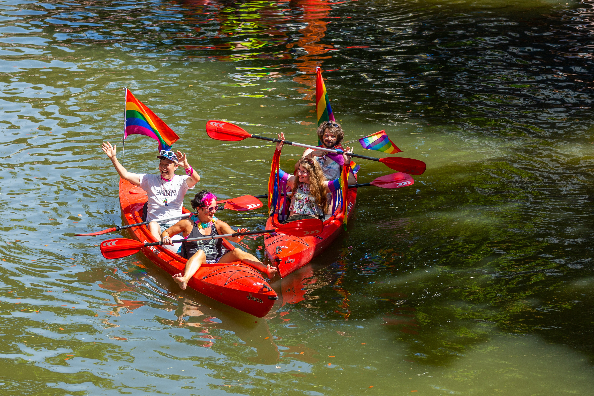
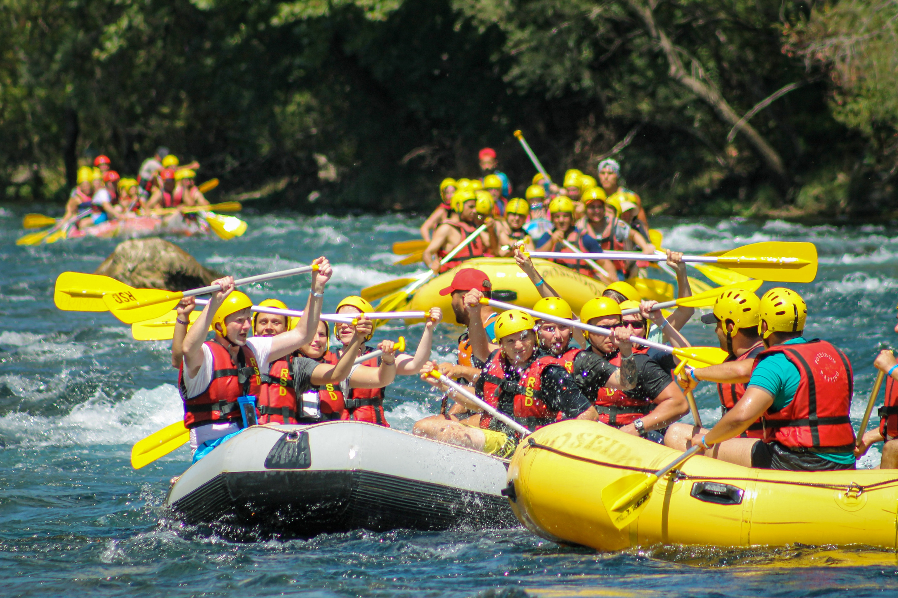
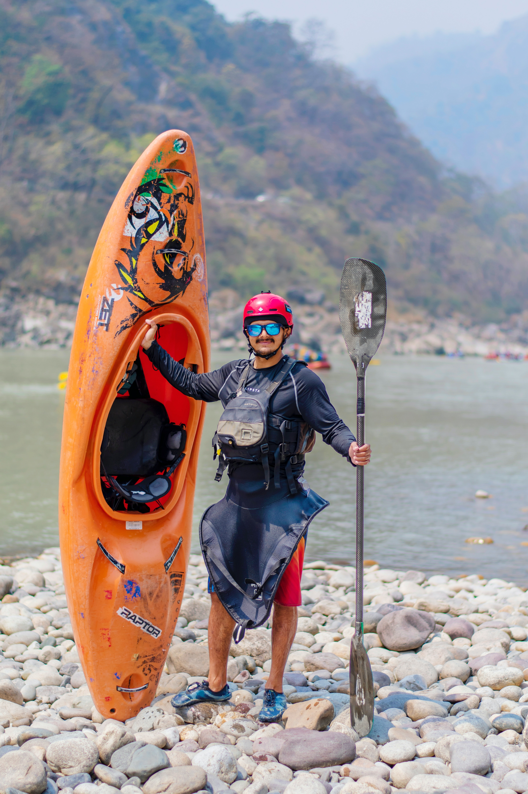
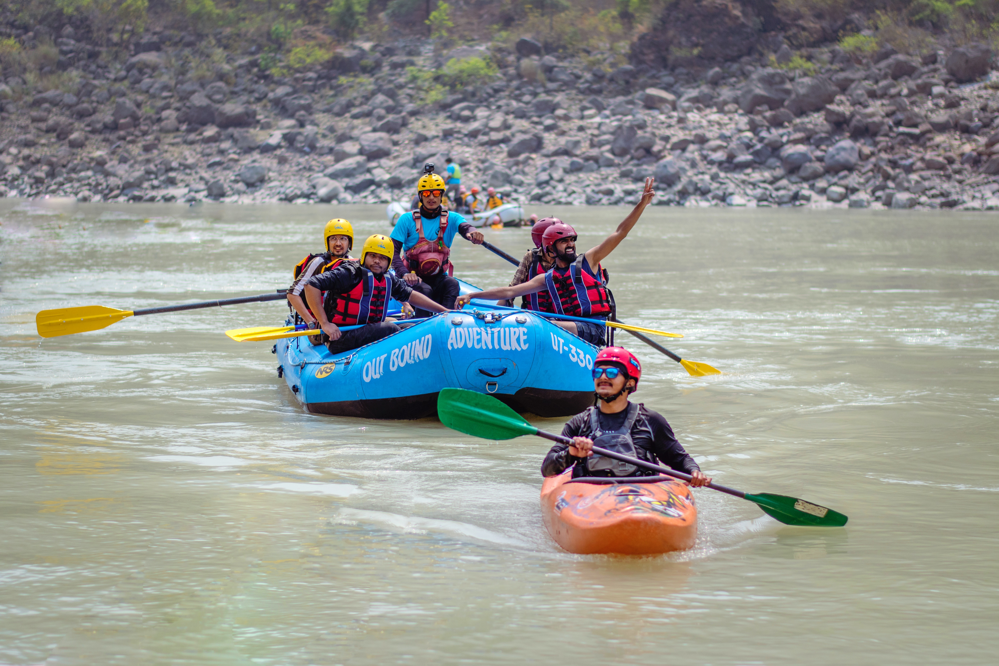

White Water Rafting is FUN!
When it comes down to it, our favorite benefit that comes from rafting is pretty simple: it's a really good time! Soaking in the Colorado sun while floating down sections of wilderness that you can only see on the water is an exhilarating and enjoyable experience.

What is whitewater rafting?
White-water rafting is the activity of riding on a raft over rough, dangerous parts of a fast-flowing river.

{kind=link}
Why do people go whitewater rafting?
Helps You Release Stress. The biggest reason we think you should drop everything and go white water rafting in Gatlinburg TN is that it helps you relieve stress. This can be stress from work, stress from life at home, stress from personal responsibilities, or anything else that tends to build up over time.

What is the point of white water rafting?
In case you weren't aware, whitewater rafting can be one of the most adrenaline-pumping, thrill-seeking activities out there. From watching the horizon line disappear out of sight, signaling that you're about to drop 15 feet in 6 seconds, to paddling for your life through Class IV+ rapids, it's a wild ride.


Where is whitewater rafting most popular? Is rafting a sport?
Rafting on certain sections of rivers is considered an extreme sport and can be fatal, while other sections are not so extreme or difficult. Rafting is also a competitive sport practiced around the world which culminates in a world rafting championship event between the participating nations.

{kind=link}

Why is river rafting thrilling?
The strong and extreme current and turbulence in the water makes it very thrilling. The main goal of this sport is to maneuver and navigate the raft through rapids or turbulent waters, often times taking you over rocks and drops, without capsizing the raft.


{kind=link}


What does white water rafting feel like?
The North Fork of the American is the best Spring rafting day trip in California. This 9 or 11 mile run consisting of adrenalin-packed Class 4/5 rapids and timeless natural beauty. This is a free-flowing river dependent on snowmelt and rainfall.



{kind=link}
What is white water adventure?
Whitewater sports are the art of bobbing about in a boat, large or small, in moving water. While whitewater kayaking or whitewater canoeing is a solo or duo sport, their close cousin whitewater rafting uses rafts that seat more people.


{kind=link}

{kind=link}
Why do people go whitewater rafting?
Helps You Release Stress. The biggest reason we think you should drop everything and go white water rafting in Gatlinburg TN is that it helps you relieve stress. This can be stress from work, stress from life at home, stress from personal responsibilities, or anything else that tends to build up over time.

What type of rivers are suitable for rafting?
1. Trisuli River Rafting: 2. Sunkoshi River Rafting: 3. Seti River Rafting: 4. Bhote Koshi River Rafting:

Is river rafting easy?
At normal summer flows, this level is ideal for most rafters and even non-swimmers. Its usually not too scary for most peoples first time trip, but it's fun and exciting and you will definitely get wet!

How difficult is white water rafting?
There are six classes of river difficulty in white water rafting. They range from simple to very dangerous. However the overall risk level on a rafting trip with experienced guides using proper precautions and equipment is low.


{kind=link}
How fast does a raft travel?
A typical motorized raft can load around 12-14 people including the guides and the raft operator. A raft like this may move up to 9 mph depending on the water current.

{kind=link}

{kind=link}
What is the white water rapids metaphor?
Through the metaphor it says that planned changes come with the “Calm waters”. However, emergent approach to change needs to be best fit with the “White Water Rapid”. Organizations face change like a raft in an intense river and every time it has to handle with white-water rapids.

Who invented white water rafting?
Modern whitewater rafting as we know it dates back to 1842 when Lieutenant John Fremont began exploring Colorado's Platte River. During this time, he and inventor Horace H. Day created a rubber raft featuring four rubber cloth tubes and a wrap-around floor to help survey the Great Plains and Rocky Mountains areas

{kind=link}
{kind=link}

What does white water rafting feel like?
Excitement: There is no doubt that upon a rafting vacation, you will experience thrilling excitement, enjoyment, and delight. There is something special about being swept down a river, through its torrents and rapids, that brings about a feeling of gratification and satisfaction.


How fast does a raft travel?
A typical motorized raft can load around 12-14 people including the guides and the raft operator. A raft like this may move up to 9 mph depending on the water current.

How long is a white water rafting trip?
The North Fork of the American is the best Spring rafting day trip in California. This 9 or 11 mile run consisting of adrenalin-packed Class 4/5 rapids and timeless natural beauty. This is a free-flowing river dependent on snowmelt and rainfall.


How many classes of Whitewater are there?
six categories Classification. The most widely used grading system is the International Scale of River Difficulty, where whitewater (either an individual rapid, or the entire river) is classed in six categories from class I (the easiest and safest) to class VI (the most difficult and most dangerous).

What does white water rafting feel like?
Excitement: There is no doubt that upon a rafting vacation, you will experience thrilling excitement, enjoyment, and delight. There is something special about being swept down a river, through its torrents and rapids, that brings about a feeling of gratification and satisfaction.